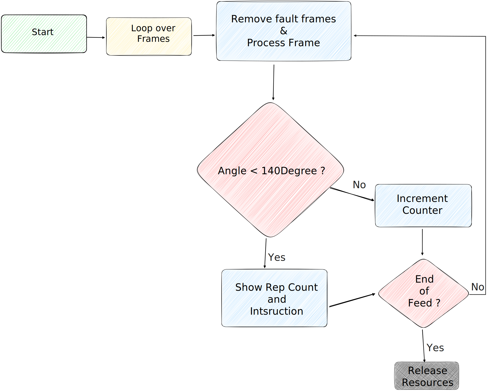

Project Overview
Computer vision-based fitness assistant for automated exercise tracking and form analysis. The system processes video input to detect exercise movements, filter noise, and provide accurate repetition counting with real-time feedback.
Built with advanced preprocessing techniques to handle video feed fluctuations and ensure consistent pose detection accuracy across different lighting conditions and camera angles.
Key Features
Scene Detection: Automatic identification of exercise segments using content-based scene analysis for precise tracking boundaries.
Frame Filtering: Advanced preprocessing to eliminate frame fluctuations and stabilize video input for consistent pose estimation.
Pose Estimation: MediaPipe-powered landmark detection for accurate joint angle calculation and movement tracking.
Rep Counting: Intelligent repetition detection based on knee joint angle analysis with timing validation for proper exercise form.
Real-time Feedback: Live guidance system providing form corrections and exercise cues during workout sessions.
Visual Interface: Comprehensive overlay display showing pose landmarks, joint angles, rep count, and timing metrics.
